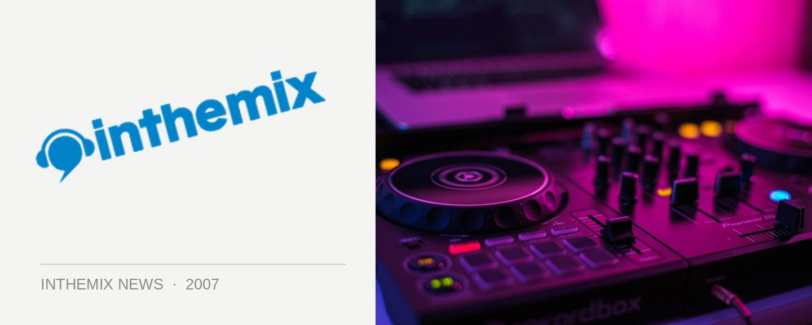

Cut the Rug at the Loft
The Loft are kicking off a new nights called Cut The Rug on the Sunday the 2nd December, with a mixture of minimal tech and deep house – the best underground tunes you could possibly hear on a Sunday night!
Special guest Darshan Jesrani from New York will be helping launch proceedings on the opening night, and the regulars on the bill will be Somatik, Jamie Lloyd And Jimi Polar who claim we can expect regular appearances from other tasty international guests…
Cut The Rug kicks off on the Sunday the 2nd December at The Loft! $10 on the door.